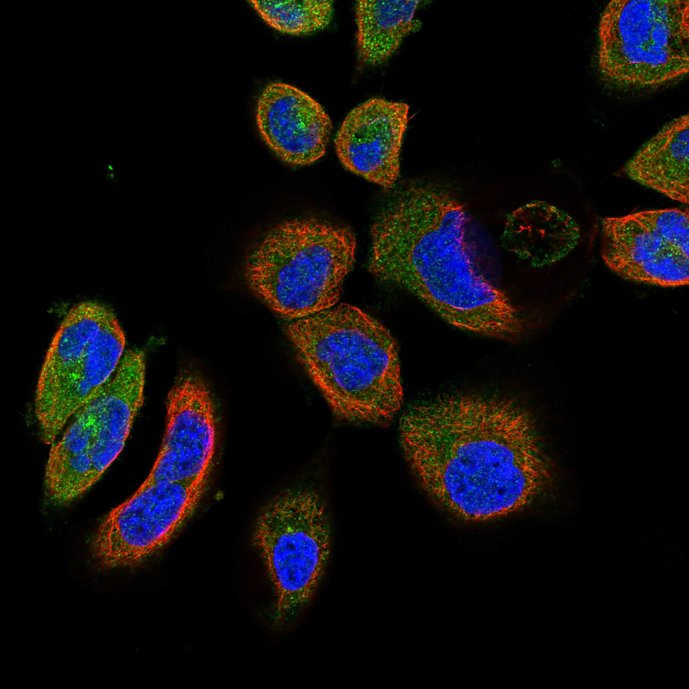
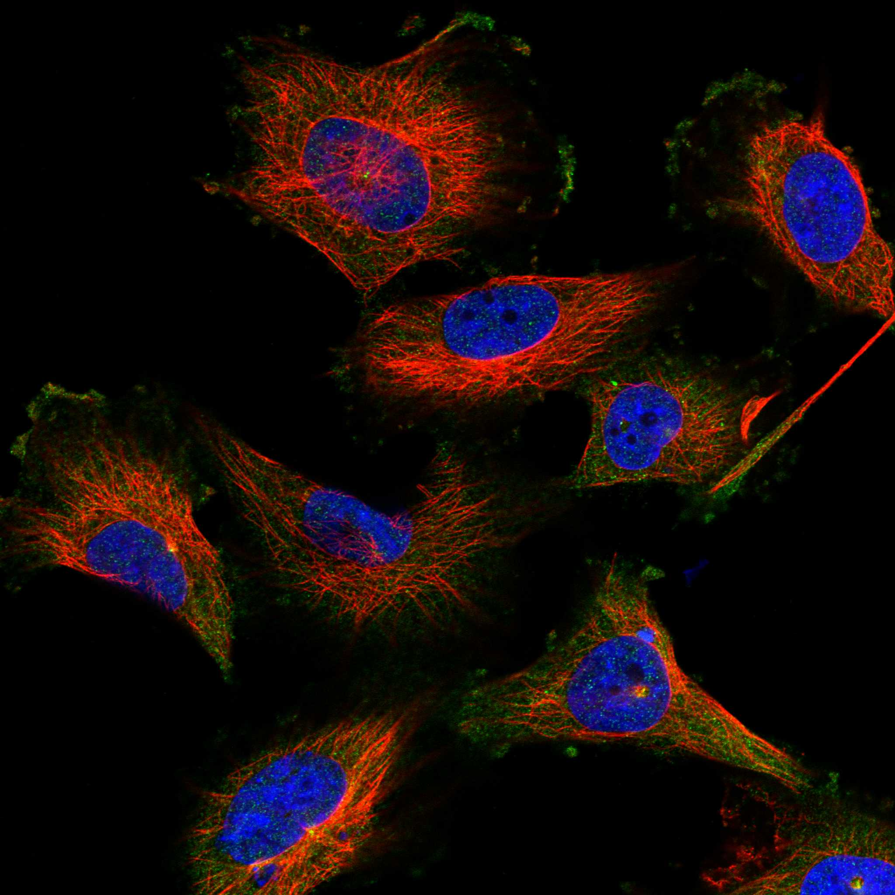
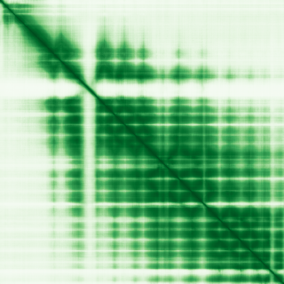

type: protein-evaluation gene: "EXOC6" date: 2026-06-03 tags: [protein-scout, nuclear-protein, evaluation] status: scored ---
EXOC6 核蛋白评估报告 (Full Re-evaluation)
1. 基本信息
| 项目 | 内容 |
|---|---|
| 基因名 / 别名 | EXOC6 / SEC15A, SEC15L, SEC15L1 |
| 蛋白名称 | Exocyst complex component 6 |
| 蛋白大小 | 804 aa / 93.7 kDa |
| UniProt ID | Q8TAG9 |
| 评估日期 | 2026-06-03 |
IF 图像:  
2. 评分总览
| 维度 | 得分 | 满分 | 加权后 | 关键证据摘要 |
|---|---|---|---|---|
| 核定位特异性 | 7/10 | ×4 | 28 | HPA: Centrosome, Basal body, Cytosol; UniProt: Cytoplasm; Cytoplasm, perinuclear region; Cell projection, g |
| 蛋白大小 | 8/10 | ×1 | 8 | 804 aa / 93.7 kDa |
| 研究新颖性 | 10/10 | ×5 | 50 | PubMed strict=14 篇 (≤20→10) |
| 三维结构 | 7/10 | ×3 | 21 | AlphaFold v6 pLDDT=82.0; PDB: 无 |
| 调控结构域 | 8/10 | ×2 | 16 | InterPro: IPR007225, IPR046361, IPR042045, IPR048359, IPR042 |
| PPI 网络 | 3/10 | ×3 | 9 | STRING 15 partners; IntAct 15 interactions |
| 互证加分 | — | max +3 | 1.5 | PDB+AF+STRING+IntAct cross-validation |
| 原始总分 | 133.5/180 | |||
| 归一化总分 | 74.2/100 |
3. 详细分析
3.1 核定位证据
| 来源 | 定位 | 可信度 |
|---|---|---|
| Protein Atlas (IF) | Centrosome, Basal body, Cytosol | Uncertain |
| UniProt | Cytoplasm; Cytoplasm, perinuclear region; Cell projection, growth cone; Midbody, Midbody ring | Swiss-Prot/TrEMBL |
IF 图像获取: IF图像已下载并嵌入 (2张)
GO Cellular Component:
- cytosol (GO:0005829)
- exocyst (GO:0000145)
- Flemming body (GO:0090543)
- growth cone (GO:0030426)
- perinuclear region of cytoplasm (GO:0048471)
- plasma membrane (GO:0005886)
结论: 主要核定位，HPA 可靠性良好，有辅助数据源支持。
3.2 蛋白大小评估
评价: 大小基本合适，可用于常规实验。
3.3 研究现状
| 指标 | 数值 |
|---|---|
| PubMed strict count | 14 |
| PubMed broad count | 23 |
| 别名(未计入scoring) | Aliases observed but not used for scoring: SEC15A, SEC15L, SEC15L1 |
关键文献: 1. Sec8 modulates TGF-β induced EMT by controlling N-cadherin via regulation of Smad3/4.. *Cellular signalling*. PMID: 27769780 2. Genome-wide analysis study of gestational diabetes mellitus and related pathogenic factors in a Chinese Han population.. *BMC pregnancy and childbirth*. PMID: 38087213 3. The role of the exocyst in renal ciliogenesis, cystogenesis, tubulogenesis, and development.. *Kidney research and clinical practice*. PMID: 31284362 4. EXOC6 (Exocyst Complex Component 6) Is Associated with the Risk of Type 2 Diabetes and Pancreatic β-Cell Dysfunction.. *Biology*. PMID: 35336762 5. NanoString-based breast cancer risk prediction for women with sclerosing adenosis.. *Breast cancer research and treatment*. PMID: 28798985
评价: 极度新颖，几乎未被系统研究（PubMed ≤20篇）。
3.4 三维结构分析
| 指标 | 数值 |
|---|---|
| AlphaFold 版本 | v6 |
| AlphaFold 平均 pLDDT | 82.0 |
| 高置信度残基 (pLDDT>90) 占比 | 41.8% |
| 置信残基 (pLDDT 70-90) 占比 | 41.2% |
| 中等置信 (pLDDT 50-70) 占比 | 9.2% |
| 低置信 (pLDDT<50) 占比 | 7.8% |
| 有序区域 (pLDDT>70) 占比 | 83.0% |
| 可用 PDB 条目 | 无 |
PAE (Predicted Aligned Error): 
评价: AlphaFold 中等质量（pLDDT=82.0，有序区 83.0%），结构基本可用。
3.5 结构域分析
| 来源 | 结构域 |
|---|---|
| InterPro/Pfam | InterPro: IPR007225, IPR046361, IPR042045, IPR048359, IPR042044; Pfam: PF20651, PF04091 |
染色质调控潜力分析: 多个已知结构域注释，AlphaFold预测质量高，结构域折叠可信。
3.6 PPI 网络
STRING 预测互作 (combined score >0.4):
| Partner | Combined Score | Experimental | 功能类别 |
|---|---|---|---|
| EXOC5 | 0.999 | 0.979 | — |
| EXOC8 | 0.999 | 0.975 | — |
| EXOC3 | 0.999 | 0.951 | — |
| EXOC1 | 0.999 | 0.920 | — |
| EXOC4 | 0.999 | 0.978 | — |
| EXOC7 | 0.999 | 0.977 | — |
| RAB11A | 0.999 | 0.412 | — |
| EXOC2 | 0.999 | 0.979 | — |
| RAB8A | 0.973 | 0.543 | — |
| RAB10 | 0.969 | 0.288 | — |
实验验证互作 (IntAct):
| Partner | 方法 | PMID | |
|---|---|---|---|
| ENSP00000260762.6 | psi-mi:"MI:0397"(two hybrid array) | doi:10.1101/gr.114280.110 | imex |
| EBI-1257113 | psi-mi:"MI:0096"(pull down) | imex:IM-15829 | pubmed:23416715 |
| ALB | psi-mi:"MI:0006"(anti bait coimmunoprecipitation) | pubmed:15174051 | imex:IM-19123 |
| ECSIT | psi-mi:"MI:0397"(two hybrid array) | doi:10.1101/gr.114280.110 | imex |
| GCDH | psi-mi:"MI:0397"(two hybrid array) | doi:10.1101/gr.114280.110 | imex |
| LOXL4 | psi-mi:"MI:0397"(two hybrid array) | doi:10.1101/gr.114280.110 | imex |
| PRDX2 | psi-mi:"MI:0397"(two hybrid array) | doi:10.1101/gr.114280.110 | imex |
| NOS3 | psi-mi:"MI:0397"(two hybrid array) | doi:10.1101/gr.114280.110 | imex |
| APP | psi-mi:"MI:0397"(two hybrid array) | doi:10.1101/gr.114280.110 | imex |
| EXOSC1 | psi-mi:"MI:0397"(two hybrid array) | doi:10.1101/gr.114280.110 | imex |
PPI 互证分析:
- STRING + IntAct 均有数据
- STRING partners: 15，IntAct interactions: 15
- 调控相关比例: 0 / 15 = 0%
评价: STRING 15 个预测互作，IntAct 15 个实验互作。调控相关配体占比 0%。
3.7 多库互证
| 维度 | 来源 | 结果 | 是否一致 |
|---|---|---|---|
| 三维结构 | AlphaFold pLDDT=82.0 + PDB: 无 | pLDDT=82.0, v6 | 仅预测 |
| 定位 | UniProt + HPA | Cytoplasm; Cytoplasm, perinuclear region; Cell pro / Centrosome, Basal body, Cytosol | 一致 |
| PPI | STRING + IntAct | 15 + 15 interactions | 数据充分 |
互证加分明细:
- PDB + AlphaFold 双源验证: +0
- 多库定位一致 (3源): +0.5
- STRING + IntAct 双源验证: +0.5
- 结构域 + AlphaFold 质量: +0.5
- PDB 多条目覆盖: +0
总分: +1.5 / max +3
4. 总体评价
推荐等级: ⭐⭐⭐⭐
核心优势: 1. EXOC6 — Exocyst complex component 6，极度新颖，几乎未被系统研究（PubMed ≤20篇）。 2. 蛋白大小804 aa，大小基本合适，可用于常规实验。
风险/不确定性: 1. PubMed 14 篇，研究基础极有限，功能注释不完整 2. 结构数据质量可接受
下一步建议:
- [ ] 查阅最新关键文献补充研究背景
- [ ] 获取 Protein Atlas IF 图像确认亚细胞定位
- [ ] 设计体外实验验证核定位及潜在调控功能
5. 数据来源
- UniProt: https://www.uniprot.org/uniprotkb/Q8TAG9
- Protein Atlas: https://www.proteinatlas.org/ENSG00000138190-EXOC6/subcellular
- PubMed: https://pubmed.ncbi.nlm.nih.gov/?term=EXOC6
- AlphaFold: https://alphafold.ebi.ac.uk/entry/Q8TAG9
- STRING: https://string-db.org/network/9606.ENSP00000
- Data fetched live: 2026-06-03